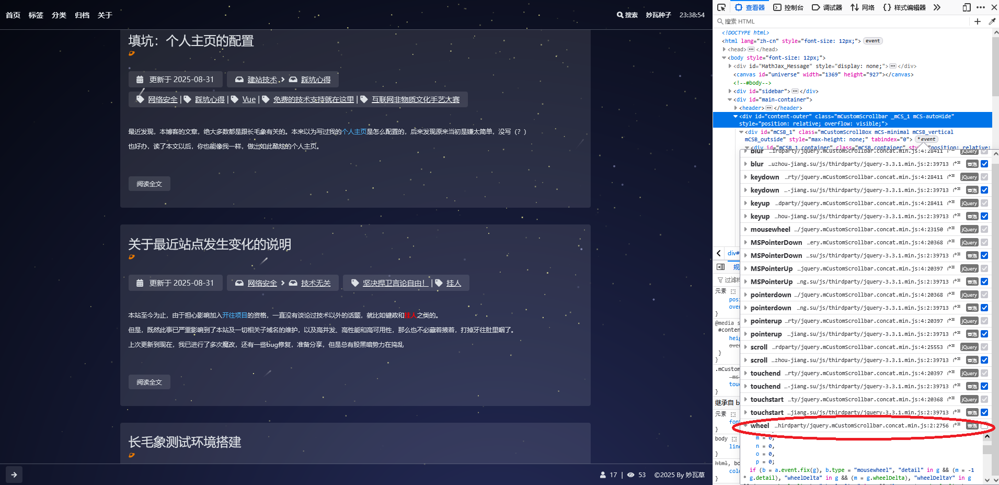

我开写的时候就预感到，本篇应该不长，但我觉得内容很重要。
上次几个月前笨蛋冰看了我的博客以后，在群里说，我的博客有个bug，就是鼠标滚轮一滚，这个代码就从最底下，往上溜到页面外去了。
这个问题很小，但修起来，我觉得太底层了，不适合我这个外行人。
这个8月，我折腾了一下实例。折腾的东西太多了。最开始我为了压片战争而重拾魔改，同时又发现了一些存储桶的安全问题。从而进行了大版本更新（估计以后还得折腾，到时候是不是应该直接去main分支？还真不好说）。
之后我又开始着手魔改Markdown的Codeblock的样式，向小森林看齐 （这方面的踩坑博客还没开始写）。
改到一半，我就想着把博客的小BUG也给修一修了。
踩坑历程
前提：我是完全不懂啥叫mCustomScrollbar，也只对jQuery略有耳闻。
首先，按F12开始调试。
对比笨蛋冰的博客，发现我跟他的主题架构没有可比性。
经过鼠标滚动，发现它样式的属性会发生变化，于是定位到了.js。
我使用的是Firefox浏览器，浏览了Fan-lv的博客和我的博客，发现都有这个通病。
通过F12界面，我发现了影响这个样式的.js文件

只要把图中所圈wheel项的勾取消掉，鼠标滚轮就无法翻页。这样就跟修轮胎一样，找到了这是什么控件在起作用。
然后我就发现这个文件太复杂了😭
一度想放弃。
然后我最后再上网搜一下怎么调整鼠标滚轮的敏感度。
直接搜索怎么调鼠标滚轮敏感度，那出来的都是改Windows设置。直接转到“调试器”，发现了这个文件名叫mCustomScrollbar什么的，上网搜这个看看有没有文档。
就搜出来很多类似这样的文章 https://www.cnblogs.com/ping228/p/scroll-plug.html
它们说这个控件有4个文件，名字类似的，我就找到俩。
文章中指出了一段代码
1 | $("#main").mCustomScrollbar({ |
还列出了详细的参数
set_width:false：设置你内容的宽度 值可以是像素或者百分比
set_height:false：设置你内容的高度 值可以是像素或者百分比
horizontalScroll:Boolean：是否创建一个水平滚动条 默认是垂直滚动条 值可为:true(创建水平滚动条) 或 false
scrollInertia:Integer：滚动的惯性值 在毫秒中 使用0可以无滚动惯性 (滚动惯性可以使区块滚动更加平滑)
scrollEasing:String：滚动动作类型 查看 jquery UI easing 可以看到所有的类型
mouseWheel:String/Boolean：鼠标滚动的支持 值为:true.false,像素 默认的情况下 鼠标滚动设置成像素值 填写false取消鼠标滚动功能
mouseWheelPixels:Integer：鼠标滚动中滚动的像素数目 值为以像素为单位的数值
autoDraggerLength:Boolean：根据内容区域自动调整滚动条拖块的长度 值:true,false
scrollButtons:{ enable:Boolean }：是否添加 滚动条两端按钮支持 值:true,false
scrollButtons:{ scrollType:String }：滚动按钮滚动类型 值:”continuous”(当你点击滚动控制按钮时断断续续滚动) “pixels”(根据每次点击的像素数来滚动) 点击这里可以看到形象的例子
scrollButtons:{ scrollSpeed:Integer }：设置点击滚动按钮时候的滚动速度(默认 20) 设置一个更高的数值可以更快的滚动
scrollButtons:{ scrollAmount:Integer }：设置点击滚动按钮时候每次滚动的数值 像素单位 默认 40像素
advanced:{ updateOnBrowserResize:Boolean }：根据百分比为自适应布局 调整浏览器上滚动条的大小 值:true,false 设置 false 如果你的内容块已经被固定大小
advanced:{ updateOnContentResize:Boolean }：自动根据动态变换的内容调整滚动条的大小 值:true,false 设置成 true 将会不断的检查内容的长度并且据此改变滚动条大小 建议除非必要不要设置成 true 如果页面中有很多滚动条的时候 它有可能会产生额外的移出 你可以使用 update 方法来替代这个功能
advanced:{ autoExpandHorizontalScroll:Boolean }：自动扩大水平滚动条的长度 值:true,false 设置 true 你可以根据内容的动态变化自动调整大小 可以看Demo
advanced:{ autoScrollOnFocus:Boolean }：是否自动滚动到聚焦中的对象 例如表单使用类似TAB键那样跳转焦点 值:true false
callbacks:{ onScrollStart:function(){} }：使用自定义的回调函数在滚动时间开始的时候执行 具体请看Demo
callbacks:{ onScroll:function(){} }：自定义回调函数在滚动中执行 Demo 同上
callbacks:{ onTotalScroll:function(){} }：当滚动到底部的时候调用这个自定义回调函数 Demo 同上
callbacks:{ onTotalScrollBack:function(){} }：当滚动到顶部的时候调用这个自定义回调函数 Demo 同上
callbacks:{ onTotalScrollOffset:Integer }：设置到达顶部或者底部的偏移量 像素单位
callbacks:{ whileScrolling:function(){} }：当用户正在滚动的时候执行这个自定义回调函数
callbacks:{ whileScrollingInterval:Integer }：设置调用 whileScrolling 回调函数的时间间隔 毫秒单位
于是发现这两条很有意思
mouseWheelPixels:Integer：鼠标滚动中滚动的像素数目 值为以像素为单位的数值
scrollInertia:Integer：滚动的惯性值 在毫秒中 使用0可以无滚动惯性 (滚动惯性可以使区块滚动更加平滑)
经过检查主题的_config.yml文件，发现scroll.js似乎就是控制滚轮敏感度的文件。
找到相关的
1 | $('#content-outer').mCustomScrollbar({ |
这说明鼠标滚轮像素和滚动惯性，都是默认值，把键和值加上
1 | diff --git a/source/js/scroll.js b/source/js/scroll.js |
hexo s的测试环境中，滚轮速度问题，马上就好了
部署踩坑
我用hexo d部署到GitHub上去以后，发现我写的文章已经同步了，但是鼠标滚轮问题仍未修复。
我检查了public/目录和.deploy_git/目录下的js文件，发现都有。于是检查GitHub仓库，发现也有我改动内容。
再检查浏览器的开发者模式，js代码竟然没到！
我把CloudFlare缓存的开发者模式打开，再按Ctrl+F5清除缓存刷新，发现还是没到。那基本可以肯定是GitHub同步javascript比正文更慢，再等了一会儿，BUG修复。
修这个BUG不是多重要的事情，也不是为了锻炼“永不言弃”（钻牛角尖）的精神。主要是学习排查问题的一种思路。